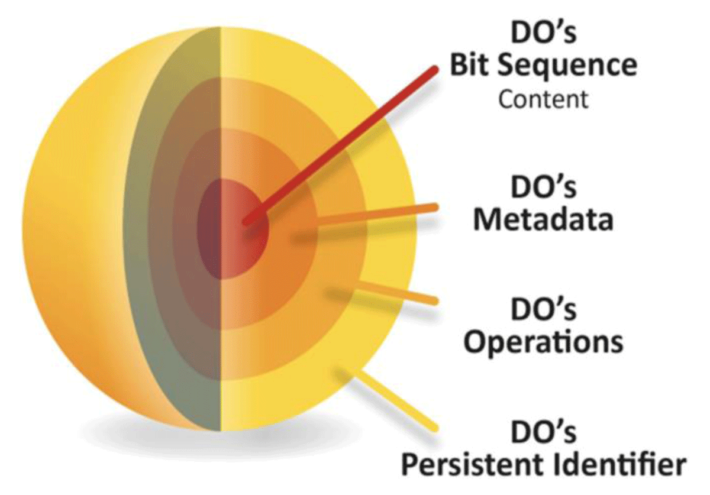

FAIR Digital Objects (FDO) bind all critical information about an entity in one place and create a new kind of actionable, meaningful and technology independent object that pervades every aspect of life today:
A technical essence of a “thing” in cyberspace.

FAIR Digital Objects can represent data, software, protocols or other research resources. They are accompanied by persistent identifiers (PID) and metadata rich enough to enable them to be reliably found, used and cited (FAIR Implementation Report, Wittenburg & Strawn 2019). FAIR Digital Object Framework (FDOF) RDA GO FAIR DiSSCo